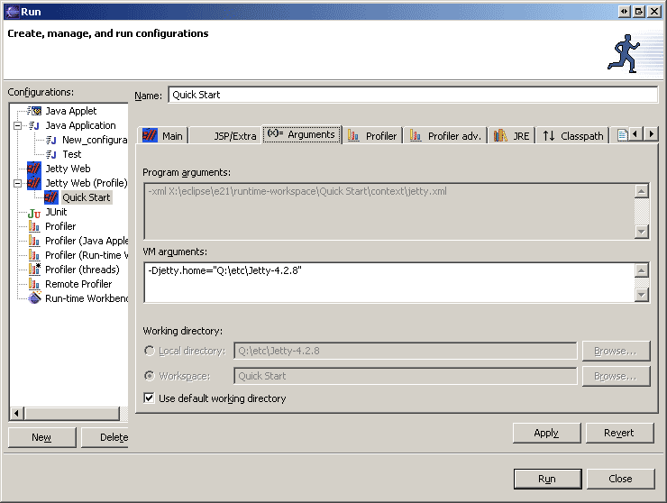

If you normally execute Jetty like this:
cd $JETTY_HOME; java -jar start.jar <path to jetty.xml>
Or if the xml file containes relative references to files, you should set the working directory in the above dialog by bringing up the 'Arguments' tab, unclick "Use default working directory", and select the proper working directory.
Note that now the "Local Directory" field is now filled out with the Jetty install directory by default. But, you still need to select it by unclicking "Use default working directory"
Also, the plugin will set the VM argument -Djetty.home="" automatically, so you might not need to change the default working directory.
